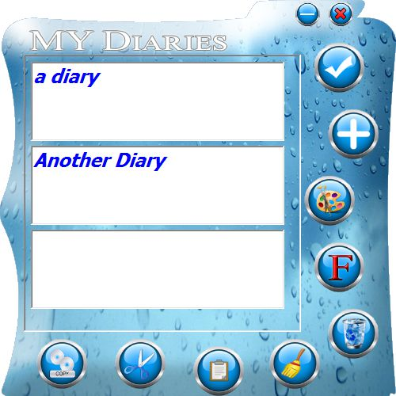
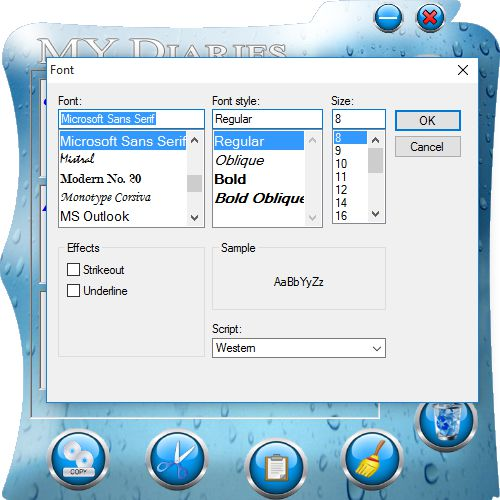

My Diaries
Store Diaries And Thoughts.
 Download
Download
Store Diareis , Thoughts or Any Important Thing
Unlimited Number OF Diaries TO Be Stored
Amazing Graphical UI.
Custom Fonts and Colors.
Saving To Special Db File.
Keys For Easy Copy , Paste Delete Current Diary.
How TO USE.
1 - Click On Plus Button TO Create New Diary Add Your Thoughts In The Newly Added Input Field.
2 - Click On Right Button TO Save And We Are Done.
Unlimited Number OF Diaries TO Be Stored
Amazing Graphical UI.
Custom Fonts and Colors.
Saving To Special Db File.
Keys For Easy Copy , Paste Delete Current Diary.
How TO USE.
1 - Click On Plus Button TO Create New Diary Add Your Thoughts In The Newly Added Input Field.
2 - Click On Right Button TO Save And We Are Done.
ScreenShots
- 
- 